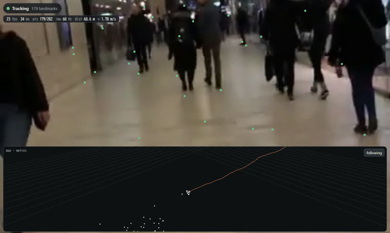
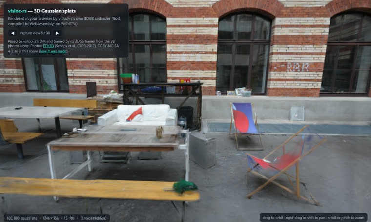

visloc-rs
SfM, visual-inertial SLAM, 3D Gaussian Splatting and map-based localization in Rust. Both pillars run in your browser, compiled to WebAssembly.

The demo on an ADVIO iPhone walk (Cortés et al., ECCV 2018, CC BY-NC 4.0).
Visual-inertial SLAMVisual-inertial odometry in your browser
visloc-rs's port of the Basalt VIO, compiled to WebAssembly. It tracks the camera in metric 3D, on the device.
- On a phone: press Start to run it live on the phone's camera and motion sensors.
- On any device: press Watch a demo to run it on a recorded iPhone walk (ADVIO).

ETH3D courtyard (Schöps et al., CVPR 2017), CC BY-NC-SA 4.0.
SfM · MVS · 3D Gaussian SplattingPhotos to 3D Gaussian splats
38 photos of a courtyard, posed by visloc-rs's SfM and trained by its 3DGS trainer, drawn by its own rasterizer on WebGPU.
- SfM in your browser: run the SfM on these photos, or on your own, and get the camera poses and a sparse point cloud. 10 to 25 s for 38 photos on a GPU (WebGPU), about a minute without one.
- Splat viewer: drag to look around, or let it glide through the viewpoints the photos were taken from. Needs WebGPU (a current Chrome, Edge or Safari).